Regression Analyses
Part 1: State Level Trends, 2001-2015
Data
We begin by reading in the combined health outcomes data, creating seasonal variables, and the combined air pollution and UV radiation data to produce an analysis at the state level. We quickly noticed that some of our variables in the air pollution and UV data were strongly correlated with each other, so we omitted several for the purposes of our regression analysis (collinearity violates our assumptions); the final correlation matrix is given below.
library(tidyverse)
outcomes_state <- read_csv("data/lc_mel_asthma_state.csv")
outcomes_county <- read_csv("data/lc_mel_asthma_county.csv")
ap_uv <- read_csv("ap/ap_uv/apuv.csv")
#State-level analysis - fewer predictors
ap_uv_state_slim <- ap_uv %>%
select(-c(countyfips, county,
pm25_max_pred, pm25_mean_pred, pm25_pop_pred,
o3_max_pred, o3_mean_pred, o3_pop_pred,
i310, i305, i380, edr)) %>%
group_by(state, year, season) %>%
#Take medians across county for each season
summarize(across(pm25_med_pred:edd, median)) %>%
pivot_wider(names_from = season, values_from = pm25_med_pred:edd)
#State-level analysis - more predictors
ap_uv_state <- ap_uv %>%
select(-c(countyfips, county)) %>%
group_by(state, year, season) %>%
#Take medians across county for each season
summarize(across(pm25_max_pred:i380, median)) %>%
pivot_wider(names_from = season, values_from = pm25_max_pred:i380)
outcomes_wider_state <- outcomes_state %>%
pivot_wider(names_from = outcome, values_from = age_adjusted_incidence_rate)
state_analysis <- left_join(outcomes_wider_state, ap_uv_state_slim)
#Correlations
state_analysis_corr <- state_analysis %>%
select(`lung cancer`:edd_Winter) %>%
do(as.data.frame(cor(., method="pearson", use="pairwise.complete.obs"))) %>%
knitr::kable()
state_analysis_corr| lung cancer | melanoma | asthma | pm25_med_pred_Fall | pm25_med_pred_Spring | pm25_med_pred_Summer | pm25_med_pred_Winter | o3_med_pred_Fall | o3_med_pred_Spring | o3_med_pred_Summer | o3_med_pred_Winter | edd_Fall | edd_Spring | edd_Summer | edd_Winter | |
|---|---|---|---|---|---|---|---|---|---|---|---|---|---|---|---|
| lung cancer | 1.0000000 | 0.2082952 | 0.3107250 | 0.8986288 | 0.8198802 | 0.7882240 | 0.7974809 | 0.1919442 | 0.3188281 | 0.7231695 | -0.7575209 | 0.4423832 | 0.3596362 | 0.7183017 | 0.1543232 |
| melanoma | 0.2082952 | 1.0000000 | -0.7112906 | -0.1634813 | -0.1539077 | -0.3414310 | 0.1111093 | 0.2199124 | -0.0692780 | -0.2151543 | 0.1610076 | 0.5326605 | 0.3733857 | 0.1302414 | 0.3810257 |
| asthma | 0.3107250 | -0.7112906 | 1.0000000 | 0.1324778 | 0.1347419 | 0.3681750 | -0.1162262 | -0.4738109 | 0.2878737 | 0.0941785 | -0.0887587 | -0.6790830 | -0.5864353 | -0.3469688 | -0.4382772 |
| pm25_med_pred_Fall | 0.8986288 | -0.1634813 | 0.1324778 | 1.0000000 | 0.8990588 | 0.8582926 | 0.7793254 | 0.2840132 | 0.1924560 | 0.7889453 | -0.8460845 | 0.3921520 | 0.3250380 | 0.7189860 | 0.1022595 |
| pm25_med_pred_Spring | 0.8198802 | -0.1539077 | 0.1347419 | 0.8990588 | 1.0000000 | 0.8303884 | 0.7592112 | 0.2658257 | 0.2314727 | 0.7210006 | -0.8427712 | 0.2484149 | 0.4710869 | 0.7013698 | 0.0388916 |
| pm25_med_pred_Summer | 0.7882240 | -0.3414310 | 0.3681750 | 0.8582926 | 0.8303884 | 1.0000000 | 0.6984350 | 0.1996813 | 0.2962791 | 0.8374731 | -0.7890281 | 0.1961149 | 0.1081415 | 0.6464591 | 0.0891841 |
| pm25_med_pred_Winter | 0.7974809 | 0.1111093 | -0.1162262 | 0.7793254 | 0.7592112 | 0.6984350 | 1.0000000 | 0.4312721 | 0.1888207 | 0.6572143 | -0.7372041 | 0.6325734 | 0.2466810 | 0.7032967 | 0.1150974 |
| o3_med_pred_Fall | 0.1919442 | 0.2199124 | -0.4738109 | 0.2840132 | 0.2658257 | 0.1996813 | 0.4312721 | 1.0000000 | 0.0645681 | 0.3550059 | -0.3152226 | 0.7209518 | 0.1174262 | 0.5393190 | -0.0883089 |
| o3_med_pred_Spring | 0.3188281 | -0.0692780 | 0.2878737 | 0.1924560 | 0.2314727 | 0.2962791 | 0.1888207 | 0.0645681 | 1.0000000 | 0.2788961 | -0.2219670 | 0.1439151 | 0.4159598 | 0.2821319 | 0.1649401 |
| o3_med_pred_Summer | 0.7231695 | -0.2151543 | 0.0941785 | 0.7889453 | 0.7210006 | 0.8374731 | 0.6572143 | 0.3550059 | 0.2788961 | 1.0000000 | -0.7726044 | 0.3388034 | 0.3831358 | 0.8360440 | 0.3144834 |
| o3_med_pred_Winter | -0.7575209 | 0.1610076 | -0.0887587 | -0.8460845 | -0.8427712 | -0.7890281 | -0.7372041 | -0.3152226 | -0.2219670 | -0.7726044 | 1.0000000 | -0.2692265 | -0.3273758 | -0.6197914 | -0.1665205 |
| edd_Fall | 0.4423832 | 0.5326605 | -0.6790830 | 0.3921520 | 0.2484149 | 0.1961149 | 0.6325734 | 0.7209518 | 0.1439151 | 0.3388034 | -0.2692265 | 1.0000000 | 0.2757208 | 0.4563821 | 0.1890074 |
| edd_Spring | 0.3596362 | 0.3733857 | -0.5864353 | 0.3250380 | 0.4710869 | 0.1081415 | 0.2466810 | 0.1174262 | 0.4159598 | 0.3831358 | -0.3273758 | 0.2757208 | 1.0000000 | 0.3841069 | 0.4020161 |
| edd_Summer | 0.7183017 | 0.1302414 | -0.3469688 | 0.7189860 | 0.7013698 | 0.6464591 | 0.7032967 | 0.5393190 | 0.2821319 | 0.8360440 | -0.6197914 | 0.4563821 | 0.3841069 | 1.0000000 | 0.0915974 |
| edd_Winter | 0.1543232 | 0.3810257 | -0.4382772 | 0.1022595 | 0.0388916 | 0.0891841 | 0.1150974 | -0.0883089 | 0.1649401 | 0.3144834 | -0.1665205 | 0.1890074 | 0.4020161 | 0.0915974 | 1.0000000 |
Lung Cancer
Exploration
Before performing our analysis, we may want to look at some bivariate plots with trends over time to see if there are general trends from 2001 to 2015.
library(GGally)
state_analysis %>%
filter(year %in% 2001:2015) %>%
ggpairs(columns = c("year","lung cancer", "o3_med_pred_Summer", "pm25_med_pred_Summer"),
mapping = aes(group = state, color = state),
columnLabels = c("Year", "Lung Cancer/100,000","Median summer O3, ppm", "PM 2.5, ug/m^3"))
state_plot <- state_analysis %>%
ggplot(aes(x = year, y = `lung cancer`, group = state, color = state)) +
geom_path()
spring_plot <- state_analysis %>%
ggplot(aes(x = o3_med_pred_Spring, y = `lung cancer`, group = state, color = state)) +
geom_point()
summer_plot <- state_analysis %>%
ggplot(aes(x = o3_med_pred_Summer, y = `lung cancer`, group = state, color = state)) +
geom_point()
fall_plot <- state_analysis %>%
ggplot(aes(x = o3_med_pred_Fall, y = `lung cancer`, group = state, color = state)) +
geom_point()
library(patchwork)
(state_plot + spring_plot) / (summer_plot + fall_plot)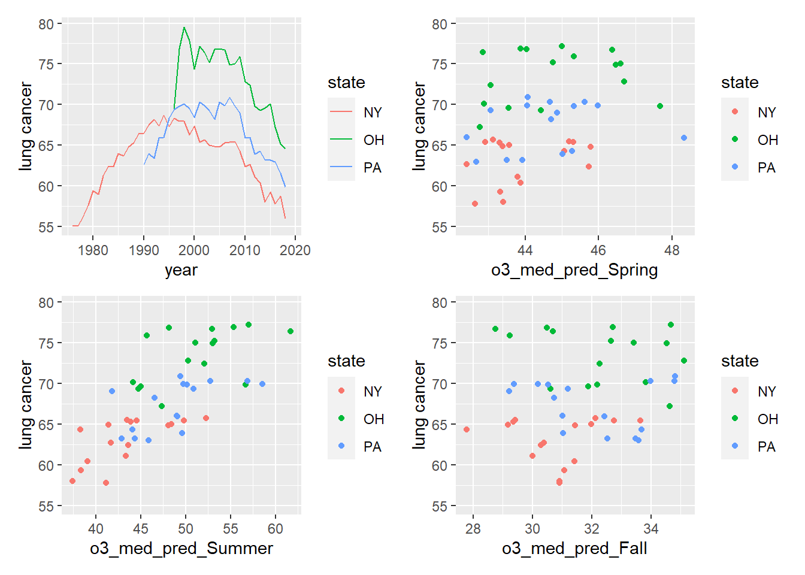
Model Fit - Air quality and lung cancer
We construct a model using the air quality variables (ozone, particulate matter), state, and powers and interactions thereof, then pare down with BIC, limiting our focus to the years 2001-2015.
state_2001_2015 <- state_analysis %>%
filter(year %in% 2001:2015) %>%
#exclude asthma, lots of missingness
select(-asthma)
aq_lung_df <- state_2001_2015 %>%
select(-c(melanoma, starts_with("edd")))
#fit_aq <- lm(`lung cancer` ~ .^2, data = aq_lung_df) - this broke in R
fit_aq <- lm(`lung cancer` ~ . +
year*(o3_med_pred_Spring +
o3_med_pred_Summer +
o3_med_pred_Fall) +
year*(pm25_med_pred_Spring +
pm25_med_pred_Summer +
pm25_med_pred_Fall) +
state*year, data = aq_lung_df)
step_bic_aq <- step(fit_aq, trace = 0, k = log(nobs(fit_aq)), direction = "backward")
summary(step_bic_aq)##
## Call:
## lm(formula = `lung cancer` ~ state + year + pm25_med_pred_Fall +
## pm25_med_pred_Spring + o3_med_pred_Summer + year:pm25_med_pred_Fall +
## state:year, data = aq_lung_df)
##
## Residuals:
## Min 1Q Median 3Q Max
## -1.75773 -0.51795 -0.00639 0.51870 1.64145
##
## Coefficients:
## Estimate Std. Error t value Pr(>|t|)
## (Intercept) 3402.03891 485.87390 7.002 3.80e-08 ***
## stateOH 1209.53035 266.45723 4.539 6.40e-05 ***
## statePA 543.09187 196.19321 2.768 0.00895 **
## year -1.65961 0.24187 -6.862 5.77e-08 ***
## pm25_med_pred_Fall -299.22919 67.68656 -4.421 9.10e-05 ***
## pm25_med_pred_Spring -0.65867 0.19252 -3.421 0.00160 **
## o3_med_pred_Summer -0.10565 0.04746 -2.226 0.03254 *
## year:pm25_med_pred_Fall 0.14930 0.03371 4.430 8.86e-05 ***
## stateOH:year -0.59658 0.13271 -4.495 7.29e-05 ***
## statePA:year -0.26793 0.09771 -2.742 0.00956 **
## ---
## Signif. codes: 0 '***' 0.001 '**' 0.01 '*' 0.05 '.' 0.1 ' ' 1
##
## Residual standard error: 0.9403 on 35 degrees of freedom
## Multiple R-squared: 0.9738, Adjusted R-squared: 0.9671
## F-statistic: 144.6 on 9 and 35 DF, p-value: < 2.2e-16Am I reading that right? \(R^2\) of 0.97! That sounds too good to be true. Let’s look at some diagnostic plots.
lung_fit <- aq_lung_df %>%
modelr::add_residuals(step_bic_aq) %>%
modelr::add_predictions(step_bic_aq)
lung_fit %>%
ggplot(aes(x = pred, y = resid)) + geom_point() + labs(x = "Predicted value", y = "Residual")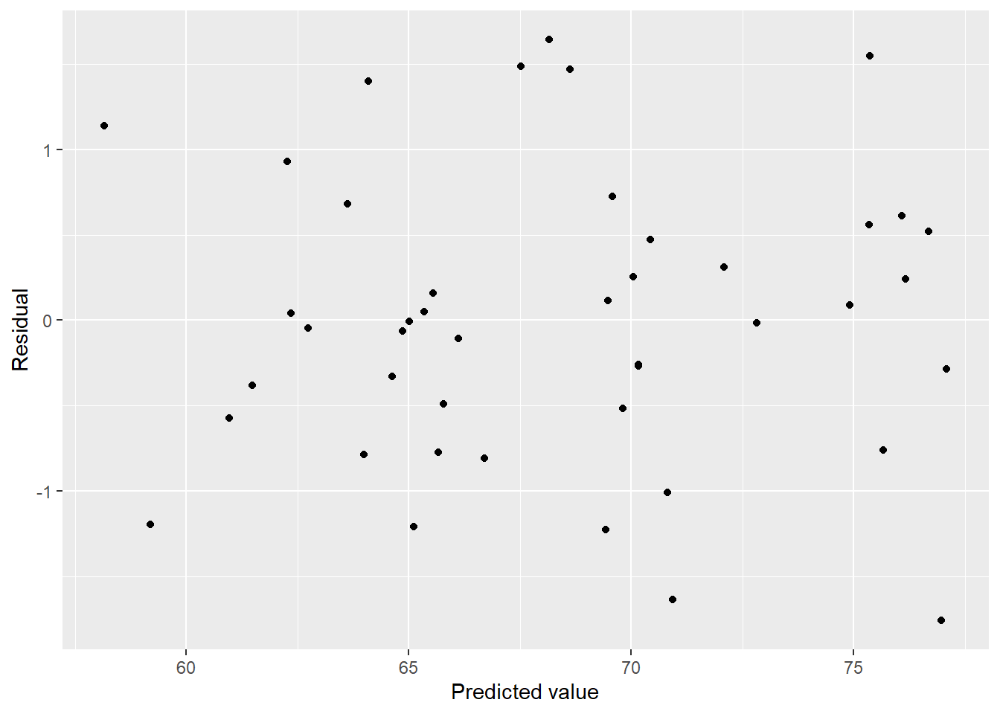
These residuals look great! Centered around 0 in a relatively even band. How about normality?
plot(step_bic_aq, which = 2)
That’s not ideal. I don’t love Box-Cox, but I wonder if it might give us some insight.
MASS::boxcox(step_bic_aq)
Really doesn’t help us; the best power of our response variable is about 1. Are there any influential points/high-leverage points?
plot(step_bic_aq, which = 5)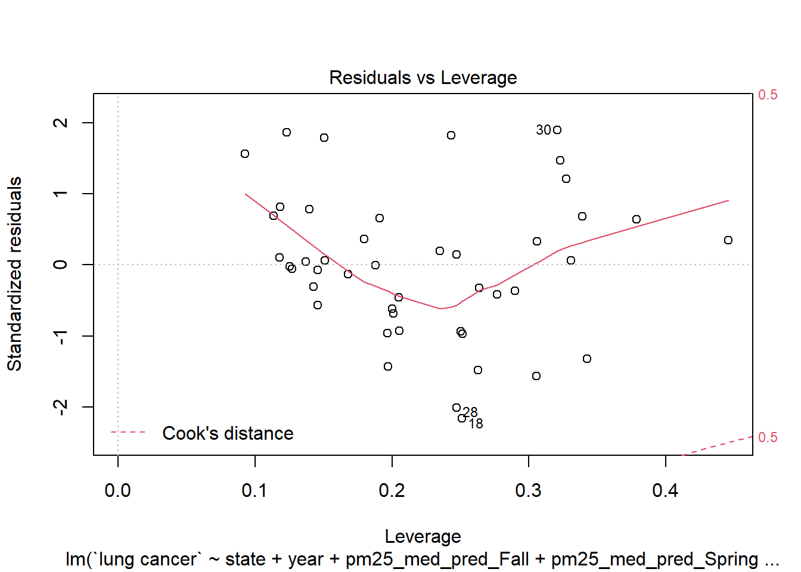
No datapoint with a Cook’s distance greater than 0.5, that’s good. Are we overfit?
Cross validation
What happens if we cross-validate against simpler models? We will use leave-one-out and Monte Carlo cross-validation.
library(modelr)
set.seed(15)
cv_df <- crossv_loo(aq_lung_df)
cv_df <- cv_df %>%
mutate(
#Ozone only
ozone = map(train, ~lm(`lung cancer` ~ o3_med_pred_Spring + o3_med_pred_Summer +
o3_med_pred_Fall, data = .x)),
#Ozone with year and state
ozone_state_year = map(train, ~lm(`lung cancer` ~ o3_med_pred_Spring + o3_med_pred_Summer +
o3_med_pred_Fall + year + state, data = .x)),
#Ozone with year and state with time interactions
ozone_state_year2 = map(train, ~lm(`lung cancer` ~ year*(o3_med_pred_Spring +
o3_med_pred_Summer +
o3_med_pred_Fall) + year + state +
year*state, data = .x)),
#BIC model
bic_fit = map(train, ~step_bic_aq, data = .x)) %>%
mutate(
rmse_ozone = map2_dbl(ozone, test, ~rmse(model = .x, data = .y)),
rmse_ozone_state_year = map2_dbl(ozone_state_year, test, ~rmse(model = .x, data = .y)),
rmse_ozone_state_year2 = map2_dbl(ozone_state_year2, test, ~rmse(model = .x, data = .y)),
rmse_bic_fit = map2_dbl(bic_fit, test, ~rmse(model = .x, data = .y)))
cv_df %>%
select(starts_with("rmse")) %>%
pivot_longer(
everything(),
names_to = "model",
values_to = "rmse",
names_prefix = "rmse_") %>%
mutate(model = fct_inorder(model)) %>%
ggplot(aes(x = model, y = rmse, fill = model)) + geom_violin() + labs(x = "Model", y = "RMSE")
Nice! Our BIC fit does the best on leave-one-out. What about Monte Carlo (1000 simulations, holdout 20%)?
set.seed(15)
cv_df <- crossv_mc(aq_lung_df, n = 1000)
cv_df <- cv_df %>%
mutate(
#Ozone only
ozone = map(train, ~lm(`lung cancer` ~ o3_med_pred_Spring + o3_med_pred_Summer +
o3_med_pred_Fall, data = .x)),
#Ozone with year and state
ozone_state_year = map(train, ~lm(`lung cancer` ~ o3_med_pred_Spring + o3_med_pred_Summer +
o3_med_pred_Fall + year + state, data = .x)),
#Ozone with year and state with time interactions
ozone_state_year2 = map(train, ~lm(`lung cancer` ~ year*(o3_med_pred_Spring +
o3_med_pred_Summer +
o3_med_pred_Fall) + year + state +
year*state, data = .x)),
#BIC model
bic_fit = map(train, ~step_bic_aq, data = .x)) %>%
mutate(
rmse_ozone = map2_dbl(ozone, test, ~rmse(model = .x, data = .y)),
rmse_ozone_state_year = map2_dbl(ozone_state_year, test, ~rmse(model = .x, data = .y)),
rmse_ozone_state_year2 = map2_dbl(ozone_state_year2, test, ~rmse(model = .x, data = .y)),
rmse_bic_fit = map2_dbl(bic_fit, test, ~rmse(model = .x, data = .y)))
cv_df %>%
select(starts_with("rmse")) %>%
pivot_longer(
everything(),
names_to = "model",
values_to = "rmse",
names_prefix = "rmse_") %>%
mutate(model = fct_inorder(model)) %>%
ggplot(aes(x = model, y = rmse, fill = model)) + geom_violin() + labs(x = "Model", y = "RMSE")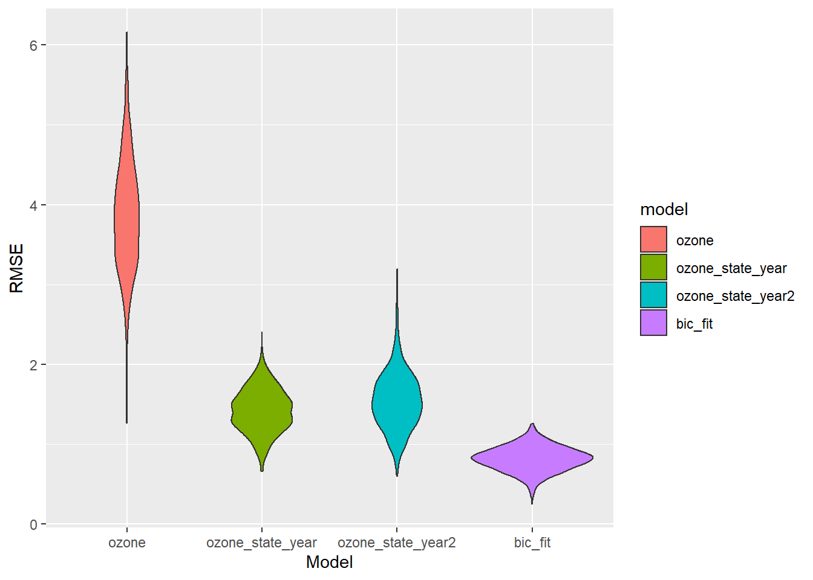
Our BIC fit wins again. But there’s still something fishy. First, this model has 10 terms and just 45 datapoints - it should almost certainly be overfit, but it still cross-validates well. Second, the \(R^2\) for this model is 0.97 - how can that be when it doesn’t include smoking, which is probably the main determinant of lung cancer? Which variables in this model are the most important?
broom::tidy(step_bic_aq) %>%
mutate(
abs_t = abs(statistic),
term = as.factor(term),
term = fct_reorder(term, abs_t)
) %>%
ggplot(aes(x = abs_t, y = term)) +
geom_col() +
labs(title = "Relative Importance of Model Terms",
y = "Model Term", x = "|t| statistic")Melanoma of the Skin
Exploration
As before, we create several bivariate plots before constructing our model.
state_analysis %>%
filter(year %in% 2001:2015) %>%
ggpairs(columns = c("year","melanoma","edd_Spring","edd_Summer"),
mapping = aes(group = state, color = state),
columnLabels = c("Year", "Melanoma/100,000", "Spring EDD (J/m^2)", "Summer EDD (J/m^2)"))
That’s weird. There seem to be negative correlations between EDD and melanoma when we break down by state, but positive correlations overall—an instance of Simpson’s paradox.
Model Fit - Melanoma and UV radiation
How well does UV radiation predict melanoma? Let’s find out. This time we limit our analysis to 2005-2015.
uv_df <- state_2001_2015 %>%
filter(year >= 2005) %>%
select(-c(starts_with("pm25"), starts_with("o3"), `lung cancer`))
mel_fit <- lm(melanoma ~ .^2, data = uv_df)
step_bic_mel <- step(mel_fit, trace = 0, k = log(nobs(mel_fit)), direction = "backward")
summary(step_bic_mel)##
## Call:
## lm(formula = melanoma ~ state + year + edd_Fall + edd_Spring +
## edd_Summer + edd_Winter + state:year + state:edd_Fall + state:edd_Spring +
## state:edd_Summer + year:edd_Fall + year:edd_Spring + year:edd_Winter +
## edd_Fall:edd_Spring + edd_Fall:edd_Summer + edd_Fall:edd_Winter +
## edd_Spring:edd_Summer, data = uv_df)
##
## Residuals:
## Min 1Q Median 3Q Max
## -1.00663 -0.22621 -0.07181 0.16824 1.02878
##
## Coefficients:
## Estimate Std. Error t value Pr(>|t|)
## (Intercept) -3.906e+03 3.716e+03 -1.051 0.31794
## stateOH 6.941e+01 6.487e+02 0.107 0.91690
## statePA -1.975e+03 5.958e+02 -3.314 0.00783 **
## year 1.675e+00 1.774e+00 0.944 0.36745
## edd_Fall 4.838e+00 2.199e+00 2.200 0.05244 .
## edd_Spring -3.220e+00 1.205e+00 -2.673 0.02338 *
## edd_Summer 1.609e-01 6.231e-02 2.582 0.02731 *
## edd_Winter 1.139e+01 5.538e+00 2.056 0.06683 .
## stateOH:year -1.484e-01 3.204e-01 -0.463 0.65316
## statePA:year 9.299e-01 2.881e-01 3.228 0.00905 **
## stateOH:edd_Fall 3.296e-02 1.307e-02 2.522 0.03029 *
## statePA:edd_Fall 1.259e-02 5.626e-03 2.238 0.04917 *
## stateOH:edd_Spring 1.704e-02 9.479e-03 1.797 0.10250
## statePA:edd_Spring 2.490e-03 4.707e-03 0.529 0.60834
## stateOH:edd_Summer 3.830e-02 1.258e-02 3.045 0.01235 *
## statePA:edd_Summer 2.369e-02 8.521e-03 2.780 0.01945 *
## year:edd_Fall -2.257e-03 1.051e-03 -2.148 0.05722 .
## year:edd_Spring 1.645e-03 5.939e-04 2.769 0.01981 *
## year:edd_Winter -5.636e-03 2.758e-03 -2.044 0.06825 .
## edd_Fall:edd_Spring 2.190e-05 1.333e-05 1.643 0.13139
## edd_Fall:edd_Summer -8.768e-05 3.309e-05 -2.650 0.02433 *
## edd_Fall:edd_Winter -5.589e-05 3.489e-05 -1.602 0.14020
## edd_Spring:edd_Summer -3.116e-05 1.509e-05 -2.065 0.06583 .
## ---
## Signif. codes: 0 '***' 0.001 '**' 0.01 '*' 0.05 '.' 0.1 ' ' 1
##
## Residual standard error: 0.886 on 10 degrees of freedom
## Multiple R-squared: 0.9643, Adjusted R-squared: 0.8858
## F-statistic: 12.28 on 22 and 10 DF, p-value: 0.0001287This model is huge, it’s almost certainly overfit. I’m sure the diagnostics will be terrible.
mel_df <- uv_df %>%
modelr::add_residuals(step_bic_mel) %>%
modelr::add_predictions(step_bic_mel)
mel_df %>%
ggplot(aes(x = pred, y = resid)) + geom_point() + labs(x = "Predicted value", y = "Residual")Residuals suggest a bit of heteroscedasticity and curvature but not as bad as I imagined. How about normality?
plot(step_bic_mel, which = 2)Definitely not normal. High leverage points?
plot(step_bic_mel, which = 5)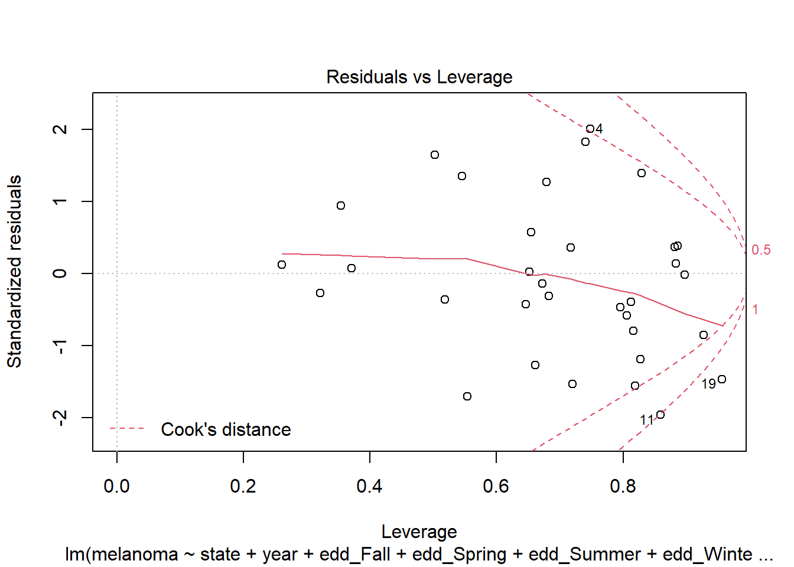
Several high leverage points. I think we want a different model. Lets’ try a simple one without interactions.
mel_fit2 <- lm(melanoma ~ ., data = uv_df)
summary(mel_fit2)##
## Call:
## lm(formula = melanoma ~ ., data = uv_df)
##
## Residuals:
## Min 1Q Median 3Q Max
## -3.0445 -1.0876 -0.1930 0.7735 2.6940
##
## Coefficients:
## Estimate Std. Error t value Pr(>|t|)
## (Intercept) -9.639e+02 1.916e+02 -5.031 3.44e-05 ***
## stateOH 6.496e+00 1.633e+00 3.978 0.000524 ***
## statePA 5.271e+00 1.186e+00 4.446 0.000157 ***
## year 5.008e-01 9.507e-02 5.268 1.86e-05 ***
## edd_Fall -2.872e-03 2.427e-03 -1.183 0.247777
## edd_Spring -1.870e-03 1.459e-03 -1.282 0.211710
## edd_Summer -3.911e-03 2.221e-03 -1.761 0.090482 .
## edd_Winter -6.473e-03 5.996e-03 -1.080 0.290657
## ---
## Signif. codes: 0 '***' 0.001 '**' 0.01 '*' 0.05 '.' 0.1 ' ' 1
##
## Residual standard error: 1.488 on 25 degrees of freedom
## Multiple R-squared: 0.7484, Adjusted R-squared: 0.6779
## F-statistic: 10.62 on 7 and 25 DF, p-value: 3.837e-06This comes at a big cost to explanatory power. Notably, the EDD variables aren’t significant. How do the residuals look?
mel_df2 <- uv_df %>%
modelr::add_residuals(mel_fit2) %>%
modelr::add_predictions(mel_fit2)
mel_df2 %>%
ggplot(aes(x = pred, y = resid)) + geom_point() + labs(x = "Predicted value", y = "Residual")We have curvature in the residuals. What is the source?
summer_resid <- mel_df2 %>%
ggplot(aes(x = edd_Summer, y = resid)) + geom_point() + labs(x = "Summer Median EDD", y = "Residual")
year_resid <- mel_df2 %>%
ggplot(aes(x = year, y = resid)) + geom_point() + labs(x = "Year", y = "Residual")
fall_resid <- mel_df2 %>%
ggplot(aes(x = edd_Fall, y = resid)) + geom_point() + labs(x = "Fall Median EDD", y = "Residual")
state_resid <- mel_df2 %>%
ggplot(aes(x = state, y = resid)) + geom_violin() + labs(x = "State", y = "Residual")
(summer_resid + year_resid) / (fall_resid + state_resid)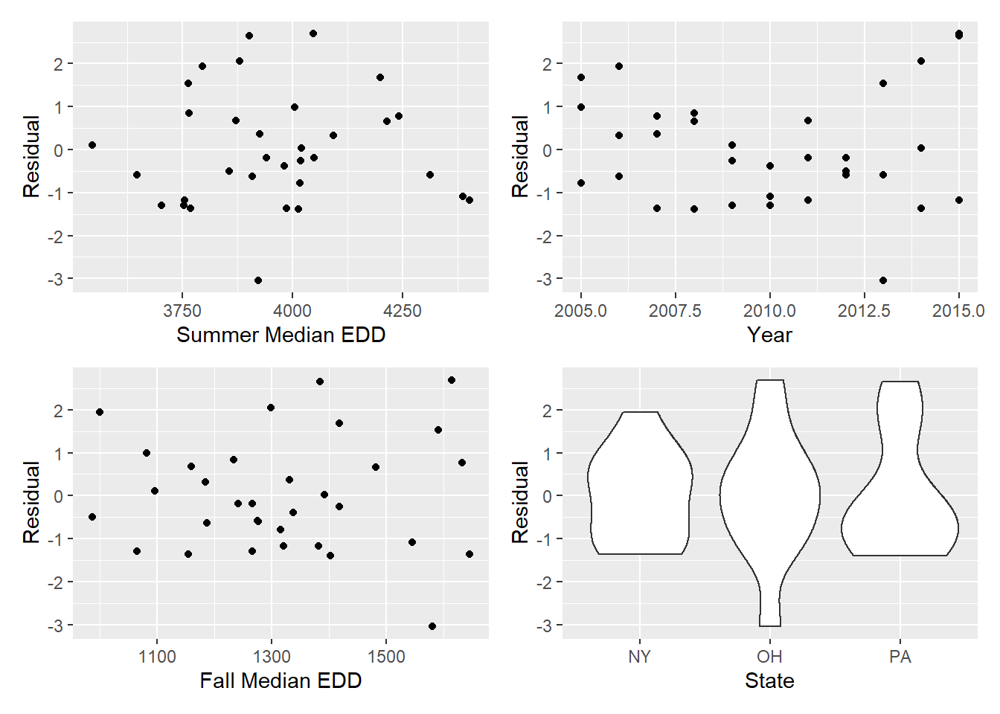
Seems like fall EDD and year might be the issues. Try transforming.
mel_fit3 <- lm(melanoma ~ state + I(1/year^3) +
edd_Spring + edd_Summer + edd_Fall + edd_Winter,
data = uv_df)
summary(mel_fit3)##
## Call:
## lm(formula = melanoma ~ state + I(1/year^3) + edd_Spring + edd_Summer +
## edd_Fall + edd_Winter, data = uv_df)
##
## Residuals:
## Min 1Q Median 3Q Max
## -3.0451 -1.0908 -0.1952 0.7702 2.7017
##
## Coefficients:
## Estimate Std. Error t value Pr(>|t|)
## (Intercept) 3.778e+02 6.453e+01 5.855 4.16e-06 ***
## stateOH 6.492e+00 1.635e+00 3.970 0.000535 ***
## statePA 5.268e+00 1.187e+00 4.437 0.000160 ***
## I(1/year^3) -2.721e+12 5.179e+11 -5.254 1.94e-05 ***
## edd_Spring -1.866e-03 1.461e-03 -1.277 0.213248
## edd_Summer -3.916e-03 2.224e-03 -1.760 0.090576 .
## edd_Fall -2.862e-03 2.430e-03 -1.178 0.249980
## edd_Winter -6.458e-03 6.005e-03 -1.075 0.292442
## ---
## Signif. codes: 0 '***' 0.001 '**' 0.01 '*' 0.05 '.' 0.1 ' ' 1
##
## Residual standard error: 1.49 on 25 degrees of freedom
## Multiple R-squared: 0.7476, Adjusted R-squared: 0.677
## F-statistic: 10.58 on 7 and 25 DF, p-value: 3.97e-06mel_df3 <- uv_df %>%
modelr::add_residuals(mel_fit3) %>%
modelr::add_predictions(mel_fit3)
mel_df3 %>%
ggplot(aes(x = pred, y = resid)) + geom_point() + labs(x = "Predicted value", y = "Residual")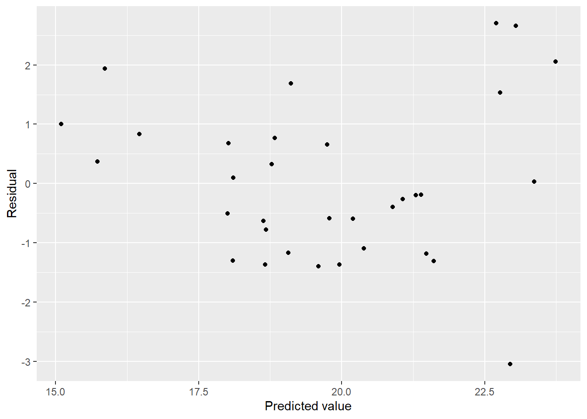
Not much better. How are the other diagnostics?
plot(mel_fit2, which = 2)Not very normal…
plot(mel_fit2, which = 5)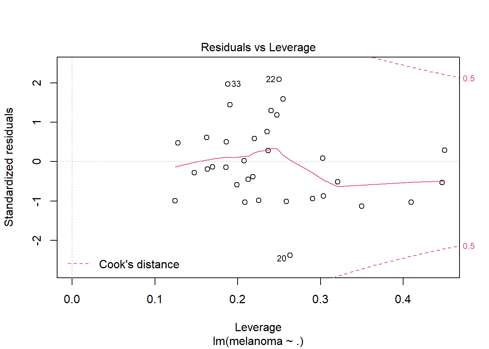
No high-leverage points. Are we overfit? We only have 33 rows.
Cross validation
set.seed(15)
cv_df <- crossv_loo(uv_df)
cv_df <- cv_df %>%
mutate(
#State and year only
state_year = map(train, ~lm(melanoma ~ state + year, data = .x)),
#EDD only
edd = map(train, ~lm(melanoma ~ edd_Winter + edd_Spring + edd_Summer + edd_Fall, data = .x)),
#EDD with year and state, linear
edd_state_year = map(train, ~mel_fit2, data = .x),
#EDD with year and state with time interactions
edd_state_year2 = map(train, ~lm(melanoma ~ year*(edd_Winter +
edd_Spring +
edd_Summer +
edd_Fall) + year + state +
year*state, data = .x)),
#BIC model
bic_fit = map(train, ~step_bic_mel, data = .x)) %>%
mutate(
rmse_state_year = map2_dbl(state_year, test, ~rmse(model = .x, data = .y)),
rmse_edd = map2_dbl(edd, test, ~rmse(model = .x, data = .y)),
rmse_edd_state_year = map2_dbl(edd_state_year, test, ~rmse(model = .x, data = .y)),
rmse_edd_state_year2 = map2_dbl(edd_state_year2, test, ~rmse(model = .x, data = .y)),
rmse_bic_fit = map2_dbl(bic_fit, test, ~rmse(model = .x, data = .y)))
cv_df %>%
select(starts_with("rmse")) %>%
pivot_longer(
everything(),
names_to = "model",
values_to = "rmse",
names_prefix = "rmse_") %>%
mutate(model = fct_inorder(model)) %>%
ggplot(aes(x = model, y = rmse, fill = model)) + geom_violin() + labs(x = "Model", y = "RMSE")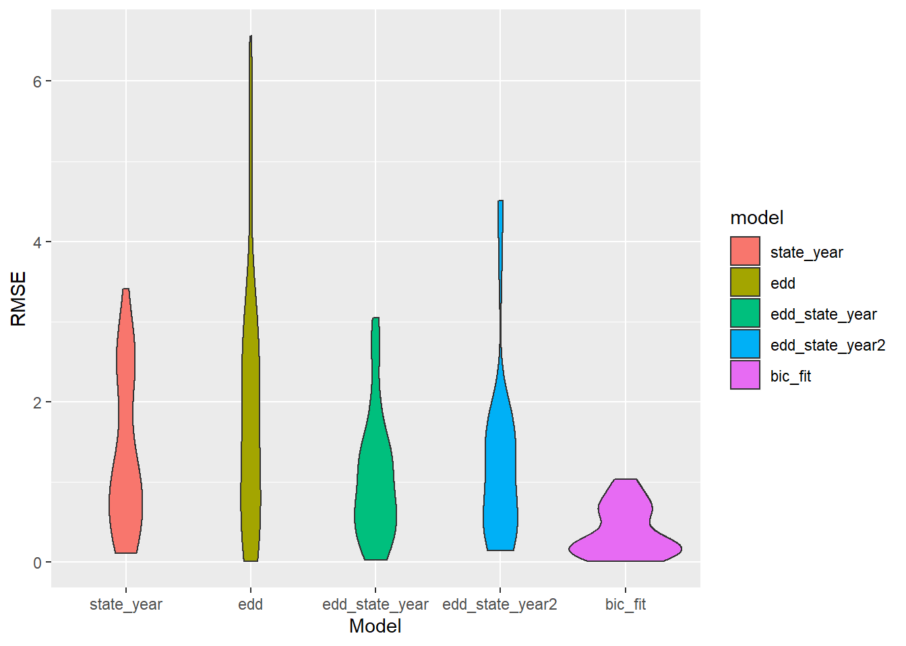
The BIC fit wins? How? Will it survive 1000 Monte Carlo simulations?
set.seed(15)
cv_df <- crossv_mc(uv_df, 1000)
cv_df <- cv_df %>%
mutate(
#State and year only
state_year = map(train, ~lm(melanoma ~ state + year, data = .x)),
#EDD only
edd = map(train, ~lm(melanoma ~ edd_Winter + edd_Spring + edd_Summer + edd_Fall, data = .x)),
#EDD with year and state, linear
edd_state_year = map(train, ~mel_fit2, data = .x),
#EDD with year and state with time interactions
edd_state_year2 = map(train, ~lm(melanoma ~ year*(edd_Winter +
edd_Spring +
edd_Summer +
edd_Fall) + year + state +
year*state, data = .x)),
#BIC model
bic_fit = map(train, ~step_bic_mel, data = .x)) %>%
mutate(
rmse_state_year = map2_dbl(state_year, test, ~rmse(model = .x, data = .y)),
rmse_edd = map2_dbl(edd, test, ~rmse(model = .x, data = .y)),
rmse_edd_state_year = map2_dbl(edd_state_year, test, ~rmse(model = .x, data = .y)),
rmse_edd_state_year2 = map2_dbl(edd_state_year2, test, ~rmse(model = .x, data = .y)),
rmse_bic_fit = map2_dbl(bic_fit, test, ~rmse(model = .x, data = .y)))
cv_df %>%
select(starts_with("rmse")) %>%
pivot_longer(
everything(),
names_to = "model",
values_to = "rmse",
names_prefix = "rmse_") %>%
mutate(model = fct_inorder(model)) %>%
ggplot(aes(x = model, y = rmse, fill = model)) + geom_violin() + labs(x = "Model", y = "RMSE")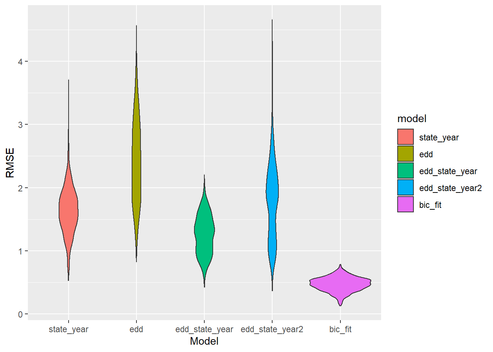
That model must be disgustingly overfit… right? How important is each variable?
broom::tidy(step_bic_mel) %>%
mutate(
abs_t = abs(statistic),
term = as.factor(term),
term = fct_reorder(term, abs_t)
) %>%
ggplot(aes(x = abs_t, y = term)) +
geom_col() +
labs(title = "Relative Importance of Model Terms",
y = "Model Term", x = "|t| statistic")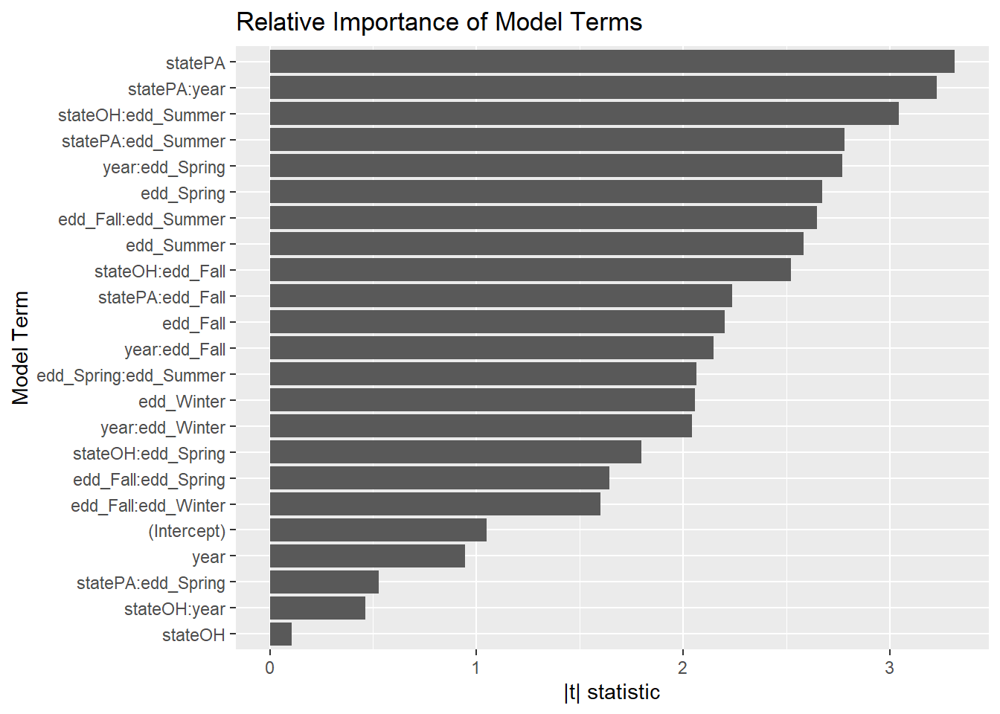
However, we see a different pattern of importance from the model with just linear terms:
broom::tidy(mel_fit2) %>%
mutate(
abs_t = abs(statistic),
term = as.factor(term),
term = fct_reorder(term, abs_t)
) %>%
ggplot(aes(x = abs_t, y = term)) +
geom_col() +
labs(title = "Relative Importance of Model Terms",
y = "Model Term", x = "|t| statistic")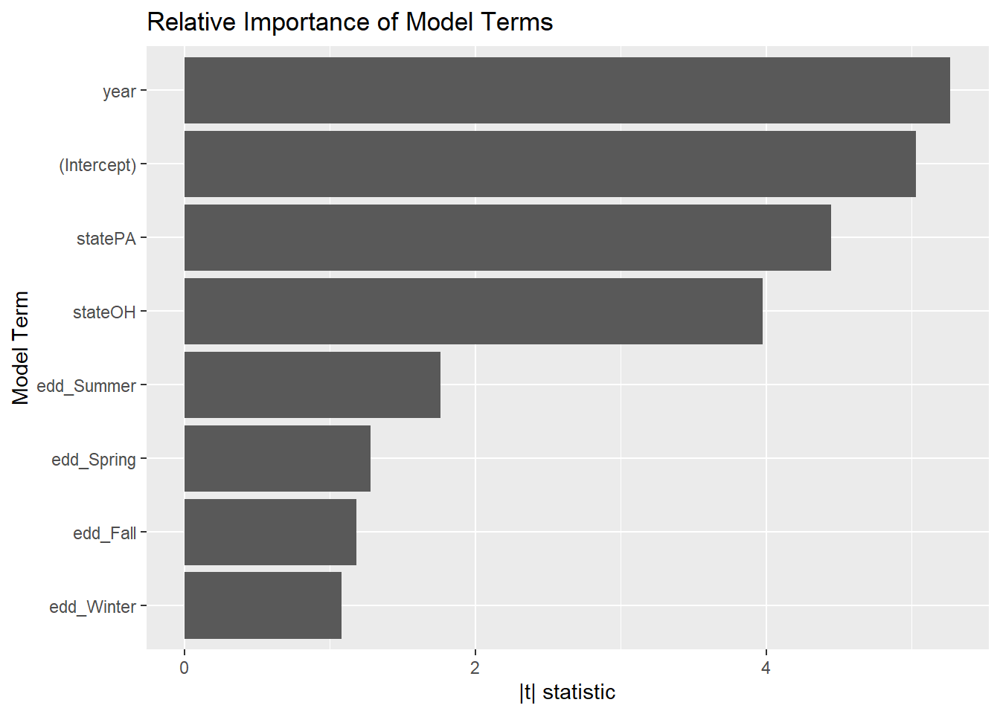
Part 2: Cross-Sectional County-Level Trends, 2014-2018
Time is a significant predictor in many of the above models. Will we still have good models without it? In exchange, we get a lot more data - resolution at the county level instead of the state level.
We create our county-level dataframe:
outcomes_wider_county <- outcomes_county %>%
pivot_wider(names_from = outcome, values_from = age_adjusted_incidence_rate)
#county-level analysis - fewer predictors
ap_uv_county_slim <- ap_uv %>%
filter(state %in% c("NY","OH","PA")) %>%
select(-c(pm25_max_pred, pm25_mean_pred, pm25_pop_pred,
o3_max_pred, o3_mean_pred, o3_pop_pred, i324,
i310, i305, i380, edr)) %>%
group_by(county, state, season) %>%
#Take medians across years for each season
summarize(across(pm25_med_pred:edd, median, na.rm = TRUE)) %>%
pivot_wider(names_from = season, values_from = pm25_med_pred:edd)
county_df <- right_join(outcomes_wider_county, ap_uv_county_slim)Again, we look at correlations among the predictors:
county_corr <- county_df %>%
select(pm25_med_pred_Fall:edd_Winter) %>%
do(as.data.frame(cor(., method="pearson", use="pairwise.complete.obs"))) %>%
knitr::kable()
county_corr| pm25_med_pred_Fall | pm25_med_pred_Spring | pm25_med_pred_Summer | pm25_med_pred_Winter | o3_med_pred_Fall | o3_med_pred_Spring | o3_med_pred_Summer | o3_med_pred_Winter | edd_Fall | edd_Spring | edd_Summer | edd_Winter | |
|---|---|---|---|---|---|---|---|---|---|---|---|---|
| pm25_med_pred_Fall | 1.0000000 | 0.9638443 | 0.8616069 | 0.9052818 | 0.2291057 | 0.0146364 | 0.8384443 | -0.6956225 | 0.7684484 | 0.8022451 | 0.8870468 | 0.2349939 |
| pm25_med_pred_Spring | 0.9638443 | 1.0000000 | 0.9158741 | 0.9028251 | 0.2809823 | 0.0353524 | 0.8916228 | -0.6912378 | 0.7924249 | 0.8272669 | 0.8918020 | 0.3220468 |
| pm25_med_pred_Summer | 0.8616069 | 0.9158741 | 1.0000000 | 0.8265179 | 0.2529572 | 0.0051948 | 0.8895923 | -0.6914356 | 0.7773812 | 0.8104157 | 0.7624534 | 0.4960550 |
| pm25_med_pred_Winter | 0.9052818 | 0.9028251 | 0.8265179 | 1.0000000 | -0.0004523 | -0.1934251 | 0.8279097 | -0.7931456 | 0.6843229 | 0.7790970 | 0.7957184 | 0.3151852 |
| o3_med_pred_Fall | 0.2291057 | 0.2809823 | 0.2529572 | -0.0004523 | 1.0000000 | 0.8829294 | 0.3808405 | 0.3893814 | 0.3971814 | 0.2426730 | 0.3636476 | 0.0583694 |
| o3_med_pred_Spring | 0.0146364 | 0.0353524 | 0.0051948 | -0.1934251 | 0.8829294 | 1.0000000 | 0.1154320 | 0.6116594 | 0.1717104 | 0.0137604 | 0.1016028 | -0.0893092 |
| o3_med_pred_Summer | 0.8384443 | 0.8916228 | 0.8895923 | 0.8279097 | 0.3808405 | 0.1154320 | 1.0000000 | -0.6201207 | 0.8356498 | 0.8538449 | 0.8446666 | 0.4939809 |
| o3_med_pred_Winter | -0.6956225 | -0.6912378 | -0.6914356 | -0.7931456 | 0.3893814 | 0.6116594 | -0.6201207 | 1.0000000 | -0.5442261 | -0.6571396 | -0.5928370 | -0.3705689 |
| edd_Fall | 0.7684484 | 0.7924249 | 0.7773812 | 0.6843229 | 0.3971814 | 0.1717104 | 0.8356498 | -0.5442261 | 1.0000000 | 0.9045582 | 0.8531265 | 0.6652107 |
| edd_Spring | 0.8022451 | 0.8272669 | 0.8104157 | 0.7790970 | 0.2426730 | 0.0137604 | 0.8538449 | -0.6571396 | 0.9045582 | 1.0000000 | 0.8444612 | 0.6335905 |
| edd_Summer | 0.8870468 | 0.8918020 | 0.7624534 | 0.7957184 | 0.3636476 | 0.1016028 | 0.8446666 | -0.5928370 | 0.8531265 | 0.8444612 | 1.0000000 | 0.3542735 |
| edd_Winter | 0.2349939 | 0.3220468 | 0.4960550 | 0.3151852 | 0.0583694 | -0.0893092 | 0.4939809 | -0.3705689 | 0.6652107 | 0.6335905 | 0.3542735 | 1.0000000 |
We average the particulate matter because the seasonal variables are highly correlated.
county_df2 <- county_df %>%
mutate(pm25_med_pred = rowMeans(select(., starts_with("pm25")))) %>%
select(-c(pm25_med_pred_Fall:pm25_med_pred_Winter))Now we can start the cross-sectional analysis.
Lung cancer, cross-sectional analysis
Exploration
county_df2 %>%
ggpairs(columns = c("lung cancer", "o3_med_pred_Summer", "o3_med_pred_Fall", "pm25_med_pred"),
mapping = aes(group = state, color = state),
columnLabels = c("Lung Cancer/100,000","Median summer O3, ppm", "Median fall O3, ppm",
"PM 2.5, ug/m^3"))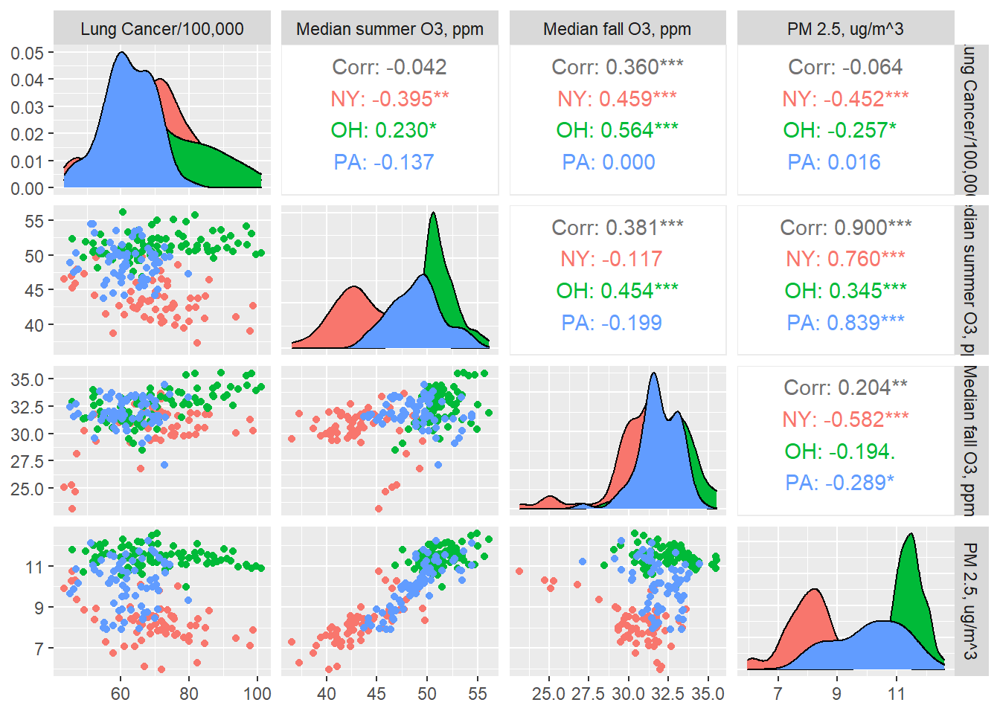
Some of these correlations seem quite flat, while others rather strong, and these trends can reverse when we break down by state.
Model fit - lung cancer and air quality, cross-sectional data
Time for another model. Once more we try to predict lung cancer as a function of air quality variables.
aq_lung_df2 <- county_df2 %>%
select(-c(melanoma, asthma, starts_with("edd"), county, fips))
fit_aq_cty <- lm(`lung cancer` ~ .^2, data = aq_lung_df2)
step_bic_aq_cty <- step(fit_aq_cty, trace = 0, k = log(nobs(fit_aq)), direction = "backward")
summary(step_bic_aq_cty)##
## Call:
## lm(formula = `lung cancer` ~ state + o3_med_pred_Fall + o3_med_pred_Spring +
## o3_med_pred_Winter + state:o3_med_pred_Fall + state:o3_med_pred_Spring +
## o3_med_pred_Fall:o3_med_pred_Winter + o3_med_pred_Spring:o3_med_pred_Winter,
## data = aq_lung_df2)
##
## Residuals:
## Min 1Q Median 3Q Max
## -29.2067 -6.0740 -0.0349 6.4618 25.7443
##
## Coefficients:
## Estimate Std. Error t value Pr(>|t|)
## (Intercept) -479.6378 191.3894 -2.506 0.012989 *
## stateOH 4.8048 57.9248 0.083 0.933974
## statePA 157.7313 58.0866 2.715 0.007186 **
## o3_med_pred_Fall -34.9097 15.5973 -2.238 0.026290 *
## o3_med_pred_Spring 36.9504 14.4287 2.561 0.011163 *
## o3_med_pred_Winter 16.6532 7.2771 2.288 0.023137 *
## stateOH:o3_med_pred_Fall 13.1302 2.6875 4.886 2.08e-06 ***
## statePA:o3_med_pred_Fall 7.8972 2.7127 2.911 0.004000 **
## stateOH:o3_med_pred_Spring -9.5845 2.7983 -3.425 0.000743 ***
## statePA:o3_med_pred_Spring -9.3894 2.6316 -3.568 0.000448 ***
## o3_med_pred_Fall:o3_med_pred_Winter 1.0163 0.5109 1.989 0.047983 *
## o3_med_pred_Spring:o3_med_pred_Winter -1.0880 0.4819 -2.258 0.025020 *
## ---
## Signif. codes: 0 '***' 0.001 '**' 0.01 '*' 0.05 '.' 0.1 ' ' 1
##
## Residual standard error: 9.595 on 204 degrees of freedom
## (1 observation deleted due to missingness)
## Multiple R-squared: 0.4063, Adjusted R-squared: 0.3743
## F-statistic: 12.69 on 11 and 204 DF, p-value: < 2.2e-16\(R^2 = 0.37\) is much more reasonable than what we were seeing before. Interestingly this model doesn’t have any particulate matter terms. How do the diagnostics look?
lung_fit_cty <- aq_lung_df2 %>%
modelr::add_residuals(step_bic_aq_cty) %>%
modelr::add_predictions(step_bic_aq_cty)
lung_fit_cty %>%
ggplot(aes(x = pred, y = resid)) + geom_point() + labs(x = "Predicted value", y = "Residual")We have some heteroscedasticity, but otherwise beautiful residuals. How about normality?
plot(step_bic_aq_cty, which = 2)Not perfect, but a lot better than the state-level model. High-leverage points?
plot(step_bic_aq_cty, which = 5)No high-leverage points.
Cross-validation
Are we overfit? We have 217 rows. Use Monte Carlo cross-validation against simpler models.
set.seed(15)
cv_df <- crossv_mc(aq_lung_df2, 1000)
cv_df <- cv_df %>%
mutate(
#PM only
pm = map(train, ~lm(`lung cancer` ~ pm25_med_pred, data = .x)),
#O3 only
o3 = map(train, ~lm(`lung cancer` ~ o3_med_pred_Fall +
o3_med_pred_Winter +
o3_med_pred_Spring +
o3_med_pred_Summer, data = .x)),
#O3 and PM
o3_pm = map(train, ~lm(`lung cancer` ~ o3_med_pred_Fall +
o3_med_pred_Winter +
o3_med_pred_Spring +
o3_med_pred_Summer +
pm25_med_pred, data = .x)),
#O3, PM, and State
o3_pm_state = map(train, ~lm(`lung cancer` ~ ., data = .x)),
#BIC model
bic_fit = map(train, ~step_bic_aq_cty, data = .x)) %>%
mutate(
rmse_pm25 = map2_dbl(pm, test, ~rmse(model = .x, data = .y)),
rmse_o3 = map2_dbl(o3, test, ~rmse(model = .x, data = .y)),
rmse_o3_pm25 = map2_dbl(o3_pm, test, ~rmse(model = .x, data = .y)),
rmse_o3_pm25_state = map2_dbl(o3_pm_state, test, ~rmse(model = .x, data = .y)),
rmse_bic_fit = map2_dbl(bic_fit, test, ~rmse(model = .x, data = .y)))
cv_df %>%
select(starts_with("rmse")) %>%
pivot_longer(
everything(),
names_to = "model",
values_to = "rmse",
names_prefix = "rmse_") %>%
mutate(model = fct_inorder(model)) %>%
ggplot(aes(x = model, y = rmse, fill = model)) + geom_violin() + labs(x = "Model", y = "RMSE")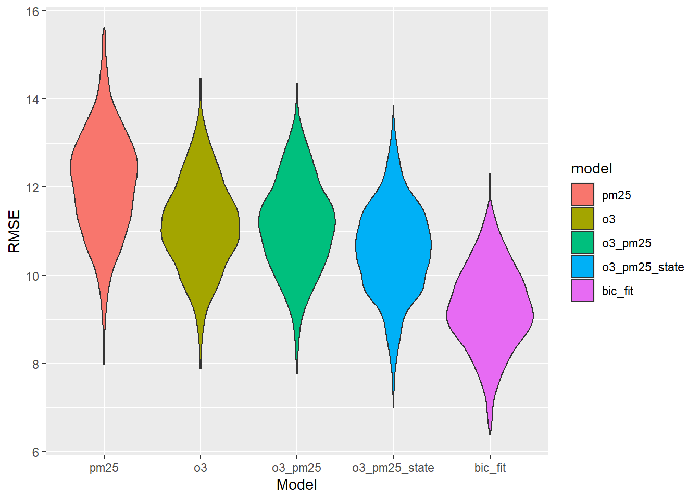
Once again the BIC model wins. But we actually shouldn’t be upset about it this time. Our model has 11 terms and 217 rows—it’s not like we only have 45 rows for that many predictors. Maybe it really isn’t overfit! How important are the predictors relative to one another?
broom::tidy(step_bic_aq_cty) %>%
mutate(
abs_t = abs(statistic),
term = as.factor(term),
term = fct_reorder(term, abs_t)
) %>%
ggplot(aes(x = abs_t, y = term)) +
geom_col() +
labs(title = "Relative Importance of Model Terms",
y = "Model Term", x = "|t| statistic")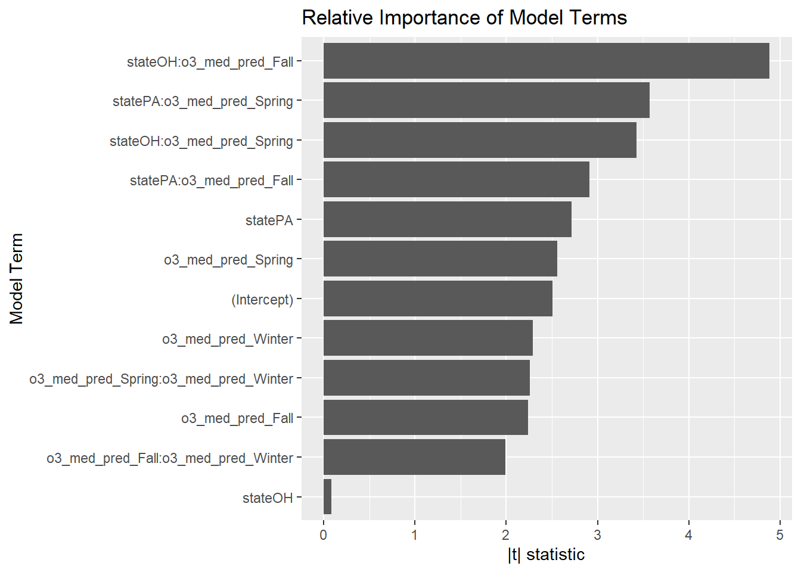
The strongest terms in this model are the state-by-ozone interactions. I wonder how much policy and industry differ between the two states.
Asthma, cross-sectional analysis
In the following analysis, we will only use those rows for which we have complete data (191), as there is some missingness in the response variable.
Exploration
asth_df <- county_df2 %>%
filter(!is.na(asthma))
asth_df %>%
ggpairs(columns = c("asthma", "o3_med_pred_Summer", "o3_med_pred_Fall", "pm25_med_pred"),
mapping = aes(group = state, color = state),
columnLabels = c("Asthma/100,000","Median summer O3, ppm", "Median fall O3, ppm",
"PM 2.5, ug/m^3"))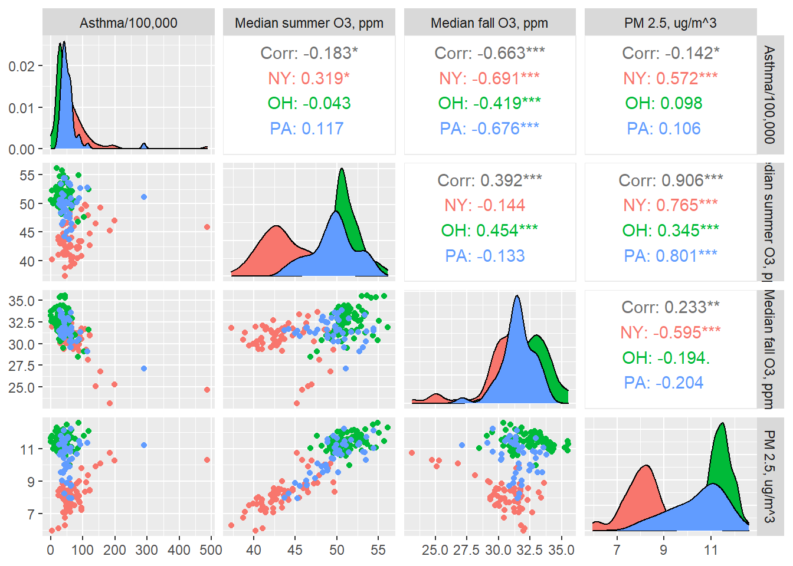
None of these exposures seem very strongly correlated with the outcome, though summer ozone correlates pretty strongly with particulate matter. Also, we may have some outliers.
Model Fit
aq_asth_df <- asth_df %>%
select(-c(melanoma, `lung cancer`, starts_with("edd"), county, fips))
fit_asth_cty <- lm(asthma ~ .^2, data = aq_asth_df)
step_bic_asth_cty <- step(fit_asth_cty, trace = 0, k = log(nobs(fit_aq)), direction = "backward")
summary(step_bic_asth_cty)##
## Call:
## lm(formula = asthma ~ state + o3_med_pred_Fall + o3_med_pred_Spring +
## state:o3_med_pred_Fall + o3_med_pred_Fall:o3_med_pred_Spring,
## data = aq_asth_df)
##
## Residuals:
## Min 1Q Median 3Q Max
## -115.202 -12.168 -1.760 8.629 244.506
##
## Coefficients:
## Estimate Std. Error t value Pr(>|t|)
## (Intercept) 3915.2387 613.0669 6.386 1.34e-09 ***
## stateOH 62.9317 138.5573 0.454 0.65022
## statePA 391.3805 146.8512 2.665 0.00838 **
## o3_med_pred_Fall -115.7822 21.1637 -5.471 1.44e-07 ***
## o3_med_pred_Spring -86.7224 15.5627 -5.572 8.77e-08 ***
## stateOH:o3_med_pred_Fall -2.6666 4.4104 -0.605 0.54617
## statePA:o3_med_pred_Fall -12.6007 4.6982 -2.682 0.00798 **
## o3_med_pred_Fall:o3_med_pred_Spring 2.6020 0.5183 5.020 1.21e-06 ***
## ---
## Signif. codes: 0 '***' 0.001 '**' 0.01 '*' 0.05 '.' 0.1 ' ' 1
##
## Residual standard error: 30.13 on 185 degrees of freedom
## Multiple R-squared: 0.597, Adjusted R-squared: 0.5817
## F-statistic: 39.15 on 7 and 185 DF, p-value: < 2.2e-16Strong \(R^2\) value but not absurd. Weird that fall ozone is protective (and strongly so). How do the residuals look?
asth_cty <- aq_asth_df %>%
modelr::add_residuals(step_bic_asth_cty) %>%
modelr::add_predictions(step_bic_asth_cty)
asth_cty %>%
ggplot(aes(x = pred, y = resid)) + geom_point() + labs(x = "Predicted value", y = "Residual")Holy outliers, Batman!
plot(step_bic_asth_cty, which = 5)We should filter out those high-leverage points and refit.
aq_asth_df2 <- aq_asth_df %>%
slice(-c(3,31,185))
fit_asth_cty <- lm(asthma ~ .^2, data = aq_asth_df2)
step_bic_asth_cty <- step(fit_asth_cty, trace = 0, k = log(nobs(fit_aq)), direction = "backward")
summary(step_bic_asth_cty)##
## Call:
## lm(formula = asthma ~ state + o3_med_pred_Fall + o3_med_pred_Spring +
## o3_med_pred_Winter + state:o3_med_pred_Fall + state:o3_med_pred_Winter,
## data = aq_asth_df2)
##
## Residuals:
## Min 1Q Median 3Q Max
## -44.875 -11.021 -0.954 8.533 63.721
##
## Coefficients:
## Estimate Std. Error t value Pr(>|t|)
## (Intercept) 523.0156 56.8882 9.194 < 2e-16 ***
## stateOH 42.6557 76.5167 0.557 0.577899
## statePA -82.5309 94.0678 -0.877 0.381463
## o3_med_pred_Fall -0.6742 2.6691 -0.253 0.800855
## o3_med_pred_Spring -6.7508 2.2294 -3.028 0.002823 **
## o3_med_pred_Winter -4.5638 1.6210 -2.815 0.005414 **
## stateOH:o3_med_pred_Fall 11.9977 3.5559 3.374 0.000907 ***
## statePA:o3_med_pred_Fall -4.6986 3.8175 -1.231 0.220011
## stateOH:o3_med_pred_Winter -16.8004 4.3672 -3.847 0.000166 ***
## statePA:o3_med_pred_Winter 7.2681 2.4625 2.951 0.003584 **
## ---
## Signif. codes: 0 '***' 0.001 '**' 0.01 '*' 0.05 '.' 0.1 ' ' 1
##
## Residual standard error: 18.25 on 180 degrees of freedom
## Multiple R-squared: 0.6123, Adjusted R-squared: 0.5929
## F-statistic: 31.59 on 9 and 180 DF, p-value: < 2.2e-16What does it look like now?
asth_cty <- aq_asth_df2 %>%
modelr::add_residuals(step_bic_asth_cty) %>%
modelr::add_predictions(step_bic_asth_cty)
asth_cty %>%
ggplot(aes(x = pred, y = resid)) + geom_point() + labs(x = "Predicted value", y = "Residual")plot(step_bic_asth_cty, which = 2)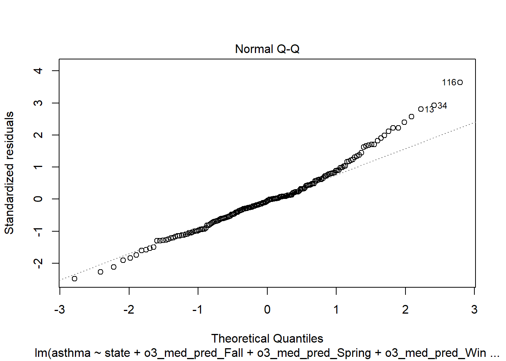
Outliers are gone… but we have serious abnormality. Tried to transform by taking the square root of the response, but it wasn’t better.
Cross-validation
Sometimes a smaller model is better. Is this one of those times?
set.seed(15)
cv_df <- crossv_mc(aq_asth_df2, 1000)
cv_df <- cv_df %>%
mutate(
#PM only
pm = map(train, ~lm(asthma ~ pm25_med_pred, data = .x)),
#O3 only
o3 = map(train, ~lm(asthma ~ o3_med_pred_Fall +
o3_med_pred_Winter +
o3_med_pred_Spring +
o3_med_pred_Summer, data = .x)),
#O3 and PM
o3_pm = map(train, ~lm(asthma ~ o3_med_pred_Fall +
o3_med_pred_Winter +
o3_med_pred_Spring +
o3_med_pred_Summer +
pm25_med_pred, data = .x)),
#O3, PM, and State
o3_pm_state = map(train, ~lm(asthma ~ ., data = .x)),
#BIC model
bic_fit = map(train, ~step_bic_asth_cty, data = .x)) %>%
mutate(
rmse_pm25 = map2_dbl(pm, test, ~rmse(model = .x, data = .y)),
rmse_o3 = map2_dbl(o3, test, ~rmse(model = .x, data = .y)),
rmse_o3_pm25 = map2_dbl(o3_pm, test, ~rmse(model = .x, data = .y)),
rmse_o3_pm25_state = map2_dbl(o3_pm_state, test, ~rmse(model = .x, data = .y)),
rmse_bic_fit = map2_dbl(bic_fit, test, ~rmse(model = .x, data = .y)))
cv_df %>%
select(starts_with("rmse")) %>%
pivot_longer(
everything(),
names_to = "model",
values_to = "rmse",
names_prefix = "rmse_") %>%
mutate(model = fct_inorder(model)) %>%
ggplot(aes(x = model, y = rmse, fill = model)) + geom_violin() + labs(x = "Model", y = "RMSE")This is pretty weird. What terms are the most important, according to the BIC model?
broom::tidy(step_bic_asth_cty) %>%
mutate(
abs_t = abs(statistic),
term = as.factor(term),
term = fct_reorder(term, abs_t)
) %>%
ggplot(aes(x = abs_t, y = term)) +
geom_col() +
labs(title = "Relative Importance of Model Terms",
y = "Model Term", x = "|t| statistic")State interactions with ozone again? This might be something to research.
Melanoma of the skin, cross-sectional analysis
county_df2 %>%
ggpairs(columns = c("melanoma", "edd_Summer", "edd_Fall", "edd_Winter", "edd_Spring"),
mapping = aes(group = state, color = state),
columnLabels = c("Melanoma/100,000","Median summer EDD", "Median fall EDD",
"Median winter EDD", "Median spring EDD"))No season has a strong correlation with melanoma, but the seasons are moderately to strongly correlated with one another, spring and fall especially.
Model fit, melanoma and solar UV radiation, cross-sectional data
mel_cty <- county_df2 %>%
select(state, melanoma, starts_with("edd"))
fit_mel_cty <- lm(melanoma ~ .^2 +
I(edd_Spring^3) +
I(edd_Summer^3) +
I(edd_Fall^3) +
I(edd_Winter^3), data = mel_cty)
step_bic_mel_cty <- step(fit_mel_cty, trace = 0, k = log(nobs(fit_aq)), direction = "backward")
summary(step_bic_mel_cty)##
## Call:
## lm(formula = melanoma ~ state + edd_Spring + edd_Summer + edd_Winter +
## state:edd_Winter + edd_Spring:edd_Winter + edd_Summer:edd_Winter,
## data = mel_cty)
##
## Residuals:
## Min 1Q Median 3Q Max
## -13.7539 -3.3520 0.1517 3.4794 16.4805
##
## Coefficients:
## Estimate Std. Error t value Pr(>|t|)
## (Intercept) 8.642e+01 9.886e+01 0.874 0.383052
## stateOH -2.945e+01 1.061e+01 -2.775 0.006047 **
## statePA -4.457e+01 7.531e+00 -5.919 1.37e-08 ***
## edd_Spring 8.822e-02 2.279e-02 3.871 0.000146 ***
## edd_Summer -6.128e-02 2.947e-02 -2.079 0.038860 *
## edd_Winter -2.670e-01 2.167e-01 -1.232 0.219272
## stateOH:edd_Winter 5.758e-02 2.258e-02 2.550 0.011523 *
## statePA:edd_Winter 9.511e-02 1.552e-02 6.129 4.56e-09 ***
## edd_Spring:edd_Winter -1.800e-04 4.913e-05 -3.663 0.000318 ***
## edd_Summer:edd_Winter 1.600e-04 6.446e-05 2.482 0.013879 *
## ---
## Signif. codes: 0 '***' 0.001 '**' 0.01 '*' 0.05 '.' 0.1 ' ' 1
##
## Residual standard error: 4.903 on 202 degrees of freedom
## (5 observations deleted due to missingness)
## Multiple R-squared: 0.267, Adjusted R-squared: 0.2343
## F-statistic: 8.175 on 9 and 202 DF, p-value: 2.477e-10Once again we have a relatively modest \(R^2\) (0.23). How do the residuals look?
mel_fit_cty <- mel_cty %>%
modelr::add_residuals(step_bic_mel_cty) %>%
modelr::add_predictions(step_bic_mel_cty)
mel_fit_cty %>%
ggplot(aes(x = pred, y = resid)) + geom_point() + labs(x = "Predicted value", y = "Residual")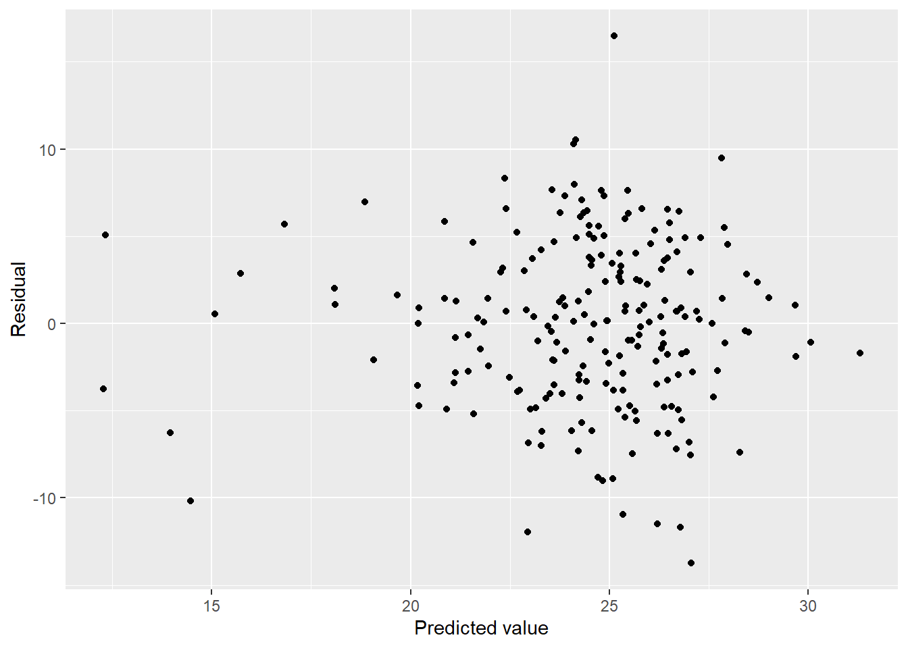
We have some heteroscedasticity but doesn’t look all that bad. Is it normal?
plot(step_bic_mel_cty, which = 2)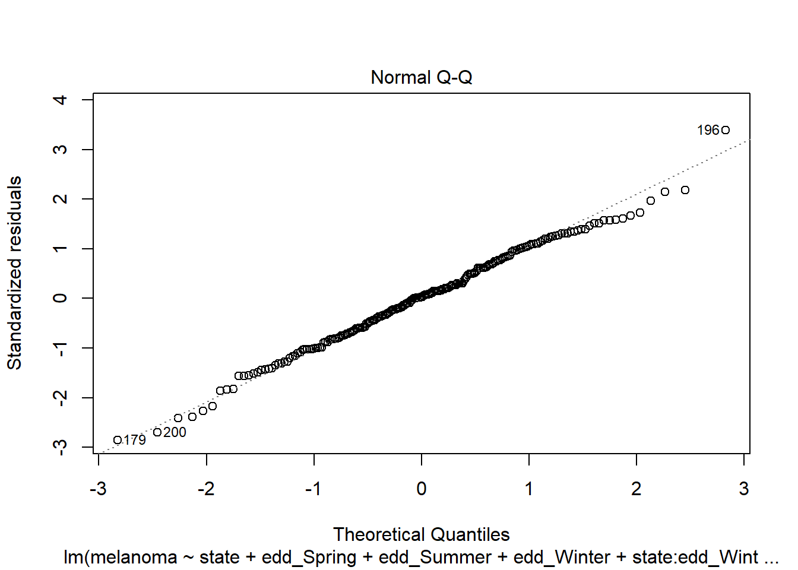
Not ideal, but mostly ok. High-leverage points?
plot(step_bic_mel_cty, which = 5)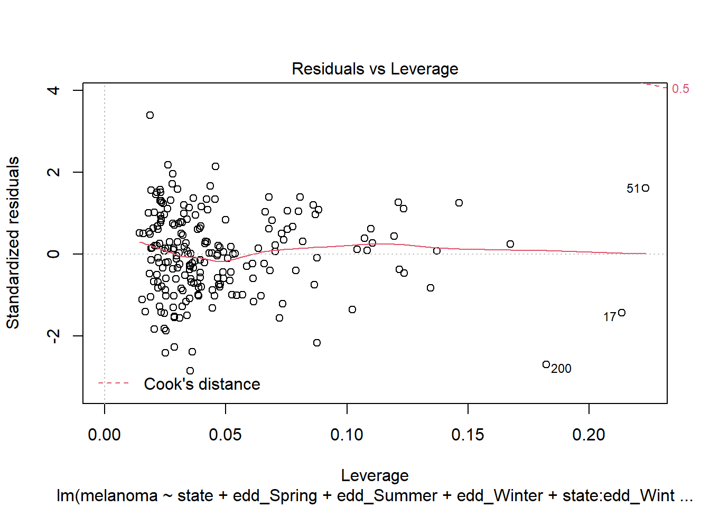
No high-leverage points (Cook’s D >0.5).
Cross validation
set.seed(15)
cv_df <- crossv_mc(mel_cty, 1000)
cv_df <- cv_df %>%
mutate(
#Summer EDD only
summer_edd = map(train, ~lm(melanoma ~ edd_Summer, data = .x)),
#Summer and fall
summer_fall = map(train, ~lm(melanoma ~ edd_Summer + edd_Fall, data = .x)),
#Four seasons
four_seasons = map(train, ~lm(melanoma ~ edd_Fall +
edd_Winter +
edd_Spring +
edd_Summer, data = .x)),
#Four seasons and state
seasons_state = map(train, ~lm(melanoma ~ ., data = .x)),
#BIC model
bic_fit = map(train, ~step_bic_mel_cty, data = .x)) %>%
mutate(
rmse_summer_edd = map2_dbl(summer_edd, test, ~rmse(model = .x, data = .y)),
rmse_summer_fall = map2_dbl(summer_fall, test, ~rmse(model = .x, data = .y)),
rmse_four_seasons = map2_dbl(four_seasons, test, ~rmse(model = .x, data = .y)),
rmse_seasons_state = map2_dbl(seasons_state, test, ~rmse(model = .x, data = .y)),
rmse_bic_fit = map2_dbl(bic_fit, test, ~rmse(model = .x, data = .y)))
cv_df %>%
select(starts_with("rmse")) %>%
pivot_longer(
everything(),
names_to = "model",
values_to = "rmse",
names_prefix = "rmse_") %>%
mutate(model = fct_inorder(model)) %>%
ggplot(aes(x = model, y = rmse, fill = model)) + geom_violin() + labs(x = "Model", y = "RMSE")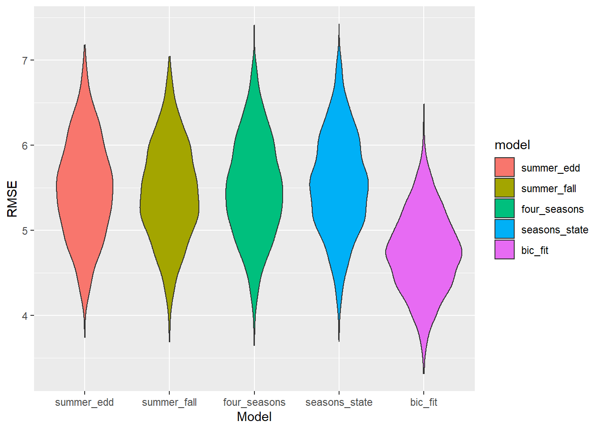
It looks like the interaction terms matter. Just how important are they?
broom::tidy(step_bic_mel_cty) %>%
mutate(
abs_t = abs(statistic),
term = as.factor(term),
term = fct_reorder(term, abs_t)
) %>%
ggplot(aes(x = abs_t, y = term)) +
geom_col() +
labs(title = "Relative Importance of Model Terms",
y = "Model Term", x = "|t| statistic")
That’s unintuitive. One might expect summer EDD would have the biggest effect on melanoma, but in this model the winter and spring EDD terms are the most important.